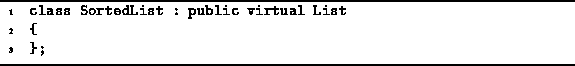

Data Structures and Algorithms
with Object-Oriented Design Patterns in C++
Data Structures and Algorithms
with Object-Oriented Design Patterns in C++
The next type of searchable container that we consider is a
sorted list .
A sorted list is like an ordered list:
It is a searchable container that holds a sequence of objects.
However, the position of an item in a sorted list is not arbitrary.
The items in the sequence appear in order, say,
from the smallest to the largest.
Of course, for such an ordering to exist,
the relation used to sort the items must be a total order .
.
In addition to the basic repertoire of operations supported by all searchable containers, sorted lists provide the following operations:
Program  gives the declaration
of the class which is used to represent sorted lists: SortedList.
Like its unsorted counterpart,
the class SortedList is derived
from the class List which is in turn derived from
SearchableContainer.
No new member functions are added to the inherited interface.
gives the declaration
of the class which is used to represent sorted lists: SortedList.
Like its unsorted counterpart,
the class SortedList is derived
from the class List which is in turn derived from
SearchableContainer.
No new member functions are added to the inherited interface.

Program: SortedList Class Definition
Sorted lists are very similar to ordered lists.
As a result, we can make use of the code for ordered lists
when implementing sorted lists.
Specifically, we will consider an array-based implementation of
sorted lists that is derived from the ListAsArray class
defined in Section ,
and a pointer-based implementation of sorted lists
that is derived from the ListAsLinkedList
class given in Section .
 Copyright © 1997 by Bruno R. Preiss, P.Eng. All rights reserved.
Copyright © 1997 by Bruno R. Preiss, P.Eng. All rights reserved.